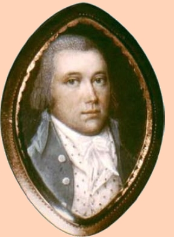
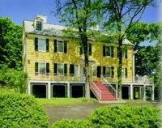

|
by Stefan Bielinski Philip Van Rensselaer was born in May 1747. He was the second son and the ninth child born to Kiliaen Van Rensselaer of Greenbush and the East Manor and his first wife, Schenectady native Ariaantie Schuyler Van Rensselaer. He was the grandson of onetime city father, Hendrick Van Rensselaer. Initially, his career path was less defined by the mighty Van Rensselaers and instead came through the Sanders family when he married Maria, daughter of Robert Sanders in February 1768. The first of their twelve children was born that December. By 1793, eleven more Van Rensselaer children were baptized in the Albany Dutch church where both parents were members. These Van Rensselaers took up residence in the family house on the east side of Pearl Street from where Philip carried on his late father-in-law's extensive and complex businesses. Like Sanders, he was primarily an importer of West Indian products, cloths, and metalware - accepting farm and forest products in return. For twenty years, he was a well-known Albany storekeeper. During that time, he shipped cargoes along the river on his own sloop. He also began to develop a farm on Van Rensselaer land running back from the river and south of the city line. Philip Van Rensselaer was an early supporter of the crusade for American liberties. Following his father to the Albany Committee of Correspondence, he was elected as a member for the second ward beginning in May 1776. He served through the life of the committee and proved a valuable liaison with the supply side of the war effort. Previously, he had served the ill-fated Canadian invasion - corresponding and transacting business with family and associates on duty to the North. By that time, he had been appointed storekeeper by General Schuyler and placed in charge of ordnance and other important military supplies. During the war, he kept the "public storehouse" and at one time had charge of ten men. What became an artillery park south of the city probably was located on his land - which was under development and constituted at least a seasonal residence! With the coming of peace, Van Rensselaer maintained a broad-based profile - maintaining his Albany store and using the Pearl Street home to be elected alderman for the second ward of Albany beginning in 1782. During the 1780s, he also purchased several parcels within the city, leased a tavern on property five miles west of the Hudson, speculated in land north and east of Albany, and continued to develop the farm known as "Cherry Hill." About 1787, he built a new home on the South Albany property - replacing an earlier structure that previously had been the home of Hitchen Holland and then Holland's son-in-law, Henry Van Schaack. That Georgian mansion survives today as a historic house museum. By 1790, his Cherry Hill farm was approaching a thousand acres and featured a tannery and brew house. His household was a prominant feature on the census for Watervliet with ten family members and five slaves. He was elected to be the first supervisor of the new town of Bethlehem in 1794. Philip Van Rensselaer filed a will early in 1798. It provided for his wife and eleven living children. He died on March 3 - two months shy of his fifty-first birthday. Maria Sanders Van Rensselaer and her children resided at Cherry Hill until her death in 1824.
Copy of a Miniature of Philip Van Rensselaer undated but attributed to New York City-based Irish miniature painter John Ramage. It is in the collection of Historic Cherry Hill. This offering has been adapted from the Philip Van Rensselaer Facebook page. It also appears in and is described in Blackburn, Cherry Hill, p. 48. Storekeeper: The exact nature of Van Rensselaer's appointment or commission is elusive. At various times he was referred to as the "storekeeper," "public storekeeper," "storekeeper for the army," and as the "Deputy Commissary of Stores and keeper of the armory." A descendant said he was appointed in May 1776. We seek more definitive documentation on his service.  Cherry Hill: Begin with the Wikipedia entry. The best published history of the farm is found in Roderic H. Blackburn, Cherry Hill: the History and Collections of a Van Rensselaer Family (1976), chapter 2. See also, pp. 153-54 for the building of Cherry Hill in 1787. Located on choice Van Rensselaer land but outside the city of Albany until 1872, Cherry Hill does not fall within the official scope of concern of the Colonial Albany Project! However, the historic property has opened a nifty archive and research center with many state-of-the-art features. Similarly, its extensive collection represents an unparalled resource for Albany family history. first posted 2/15/02; updated 3/15/17 |